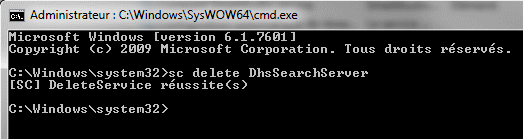
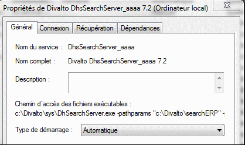

L’installateur crée puis démarre le service Windows Divalto DhsSearchServer.
En cas d’erreur de paramétrage, le service ne démarre pas. Le fichier /divalto/divaltolog/ferror.log contient le détail de l’erreur. Il est lisible par la console d’administration Xconsole.dhop. Il convient alors de corriger l’erreur puis de redémarrer le service.
Suppression (désinstallation) du service
Pour supprimer le service DhsSearchServer, lancez la commande CMD en tant qu’administrateur (voir le bandeau de l’image ci-dessous) et exécutez la commande sc delete DhsSearchServer.

Dans cette commande, il faut spécifier le nom exact du service (mais pas le nom complet). Rappelons qu'il est possible de lancer plusieurs services DhsSearchServer sous des noms différents. Par exemple :

Dans cet exemple, il faut exécuter la commande :
sc delete DhsSearchServer_aaaa.